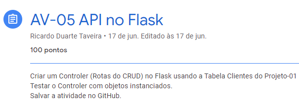

Atividade 5 de POO
Entregue em 25.06.2021 Atividade com o intuito de pratiacar os conhecimentos adquiridos durante o semestre
acerca de Python, Flask e a ORM SQL Alchemy.
Atividade com o intuito de pratiacar os conhecimentos adquiridos durante o semestre
acerca de Python, Flask e a ORM SQL Alchemy.
O que foi feito na atividade?
Entregue em 25.06.2021  Como pedido, utilizei as rotas para manipular (CRUD) meu Clientes.Programa é composto por uma tela de home (index), registro e login.